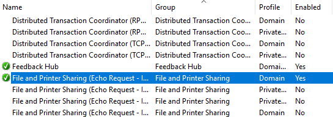
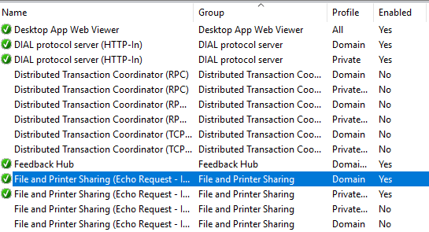
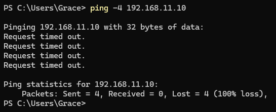
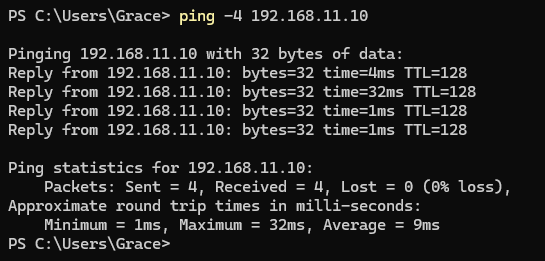
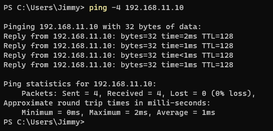
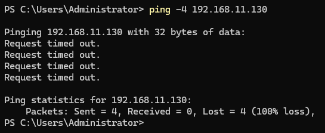
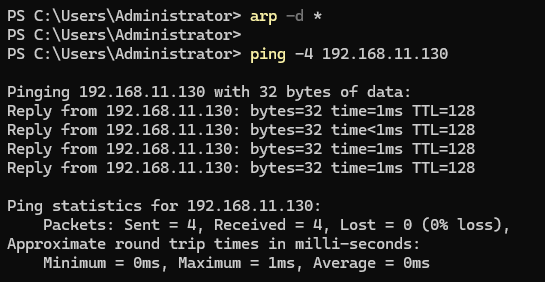
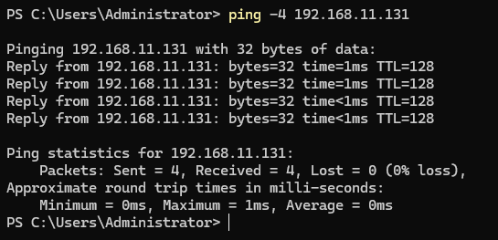

Task
Verify two-way IPv4 connectivity between DC01 and both Windows 11 client systems before installing Active Directory Domain Services, and troubleshoot any communication failures.
Configuration
- DC01
- 192.168.11.10
- CLIENT01
- 192.168.11.130
- CLIENT02
- 192.168.11.131
- Subnet
- 192.168.11.0/24
Method
Initial client-to-server test
Tested IPv4 connectivity from CLIENT01 to DC01:
ping -4 192.168.11.10The initial test returned Request timed out with 100% packet loss. Windows Defender Firewall with Advanced Security was checked on DC01, and the inbound rule File and Printer Sharing (Echo Request - ICMPv4-In) was enabled to permit ICMPv4 Echo Requests. The test was repeated from CLIENT01 and connectivity to DC01 succeeded.
CLIENT02 was then tested against the same destination. The test succeeded without requiring a firewall change on CLIENT02, because the ICMP request was outbound from CLIENT02 and the relevant inbound firewall rule had already been enabled on the destination, DC01.
Reverse connectivity test
Connectivity was then tested in the opposite direction, from DC01 toward the Windows 11 clients:
ping -4 192.168.11.130The initial DC01 → CLIENT01 test failed.
Firewall profile investigation on CLIENT01
Windows Defender Firewall with Advanced Security was inspected on CLIENT01. Multiple instances of the File and Printer Sharing (Echo Request - ICMPv4-In) rule existed for different firewall profiles:
- Domain-scoped rule: Enabled
- Private/Public-scoped rule: Disabled
Because CLIENT01 had not yet been joined to the Active Directory domain, the enabled Domain-profile rule did not apply to its current network profile. The appropriate Private/Public ICMPv4 inbound rule was enabled.
ARP troubleshooting
After correcting the firewall profile configuration on CLIENT01, another connectivity test from DC01 produced a different failure: Destination host unreachable. This was different from the earlier Request timed out result.
Because the correct client-side firewall rule was already enabled, the ARP cache on DC01 was cleared to remove stale address-resolution information:
arp -d *Connectivity was then tested again and the test succeeded with 0% packet loss. The appropriate ICMPv4 inbound rule was also enabled on CLIENT02, and reverse connectivity from DC01 was verified successfully.
Documentation
Two distinct connectivity failure modes were encountered and treated separately.
1. Request timed out
The initial CLIENT01 → DC01 test returned Request timed out. The issue was resolved by enabling the required inbound ICMPv4 Echo Request rule on the destination system, DC01. This demonstrated that although basic IP addressing was configured correctly, the destination firewall still controlled whether the server would respond to ICMP diagnostic traffic.
During later reverse testing from DC01 → CLIENT01, firewall profile scope also became important. On CLIENT01 the Domain-scoped ICMPv4 rule was already enabled, while the applicable Private/Public-scoped rule was disabled. Because the client had not yet joined the domain, enabling or relying on the Domain rule did not permit the traffic. Enabling the rule associated with the client's active firewall profile corrected that portion of the configuration.
2. Destination host unreachable
After the correct client-side firewall rule was enabled, DC01 later returned Destination host unreachable. This represented a different failure from a firewall timeout. At that stage the firewall configuration had already been corrected, and stale ARP information on DC01 was preventing the server from correctly resolving the client's Layer 2 address.
The ARP cache was cleared with arp -d * and a subsequent ping succeeded, confirming that the corrected firewall configuration was working and that stale ARP information had been masking the successful fix.
Firewall directionality
The tests also demonstrated firewall directionality. CLIENT02 → DC01 succeeded without making an inbound firewall change on CLIENT02, because the traffic originated from the client and was received by DC01. For the reverse test, DC01 to CLIENT02, the relevant inbound ICMPv4 rule needed to be permitted on CLIENT02, because CLIENT02 was now the destination receiving the Echo Request.
Security consideration
ICMP Echo Requests were enabled deliberately for lab diagnostics and connectivity verification. Allowing ICMP is not automatically appropriate in every production environment. Production firewall configuration should follow organisational security policy and may restrict ICMP according to firewall profile, source network, destination, administrative requirements and network-monitoring requirements.
Rather than disabling Windows Defender Firewall entirely, only the specific inbound functionality required for the diagnostic tests was enabled. This preserved the firewall as a security control while allowing the connectivity testing required by the lab.
Verification
| Test | Command | Result |
|---|---|---|
| CLIENT01 → DC01 (before) | ping -4 192.168.11.10 | 4 sent, 0 received: 100% loss |
| CLIENT01 → DC01 (after) | ping -4 192.168.11.10 | 4 sent, 4 received: 0% loss |
| CLIENT02 → DC01 | ping -4 192.168.11.10 | 4 sent, 4 received: 0% loss |
| DC01 → CLIENT01 (before) | ping -4 192.168.11.130 | Connectivity failed |
| DC01 → CLIENT01 (after) | ping -4 192.168.11.130 | 4 sent, 4 received: 0% loss |
| DC01 → CLIENT02 | ping -4 192.168.11.131 | 4 sent, 4 received: 0% loss |
Evidence
Firewall profile investigation


CLIENT01 → DC01


CLIENT02 → DC01

DC01 → CLIENT01


DC01 → CLIENT02
